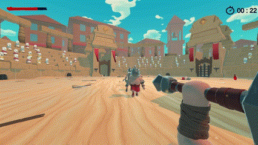

Blood And Steel
Unity, C#


Blood and Steel is a first-person arena fighting game built in Unity using C#. It was created during my second semester. This project significantly advanced my C# and Unity skills. I developed a deeper understanding of code organization and structure, which improved my overall programming approach. Working on a combat system taught me crucial lessons about responsive gameplay mechanics and what makes interactions feel satisfying to players in a group project context.
About the Game

Blood and Steel is a first-person arena fighting game focused on intense, fast-paced medieval combat.
Players face off in close-quarters battles using a variety of attacks.
The game features fluid player movement and a simple combat system, including sword strikes, knockback kicks,
and the ability to throw and retrieve your weapon. Players must adapt to two distinct enemy types, each with their own attack patterns,
adding variety and challenge to each encounter.
With a handcrafted arena built for nonstop action,
Blood and Steel delivers a brutal but funny melee experience.
Features
- Two enemy types, each with distinct attack patterns
- Fluid player movement
- Melee combat system, including sword attacks and knockback kicks
- Weapon mechanics, allowing players to throw and retrieve their sword
- Enemy spawner and wavesystem
- Item drops such as healkits and weapondrops

Responsibilities
As the sole programmer, I was responsible for coding all features,

I also fixed bugs to ensure smooth performance and managed version control with Perforce for efficient team collaboration.
I wrote the Technical Design Documents (TDD), integrated VFX, sound, and animations to enhance the player experience,
and provided technical support to troubleshoot issues.
I also supported the team with game design, offered suggestions to artists,
and assisted with Unity usage and basic training.
What I learned
Throughout this project, I enhanced my Unity and C# skills while learning the critical importance of clean code,
solid architecture, and structured systems —often through challenging firsthand experiences.
Collaborating with my team improved my communication and teamwork abilities,
ensuring smooth coordination across all aspects of development. I also gained practical experience with Perforce version control,
which streamlined our workflow and file management process. The project taught me valuable lessons about setting a clear,
manageable scope early on and quickly identifying the core gameplay elements that drive player engagement.
These insights, acquired through overcoming obstacles, ultimately helped me maintain focus and keep the development process enjoyable.
Scripts
The following scripts are excerpts from my project and may not include the full logic, as they are part of a larger set of scripts.
Player
▶
using UnityEngine;
[RequireComponent(typeof(Health))]
public class Player : MonoBehaviour
{
public static Vector3 LookDirection { get; private set; }
public static Vector3 Direction { get; private set; }
public static Vector3 Position { get; private set; }
[SerializeField]
private AnimationCurve ScreenshakeCurve;
[SerializeField]
private Transform camLock;
[SerializeField]
private Animator animator;
private Health health;
private void Awake()
{
health = GetComponent();
}
private void OnEnable()
{
health.OnDeath += PlayerDied;
health.OnHit += Screenshake;
health.OnHit += BloodyScreen;
}
private void OnDisable()
{
health.OnDeath -= PlayerDied;
health.OnHit -= Screenshake;
health.OnHit -= BloodyScreen;
}
private void FixedUpdate()
{
Direction = transform.forward;
Position = transform.position;
LookDirection = camLock.forward;
}
private void PlayerDied()
{
GameEvents.Instance.PlayerDied.Invoke();
}
private void Screenshake()
{
GameEvents.Instance.Screenshake.Invoke(ScreenshakeCurve);
}
private void BloodyScreen()
{
animator.Play("bloody_screen");
}
} Enemy
▶
using UnityEngine;
[RequireComponent(typeof(Health))]
public class Enemy : MonoBehaviour
{
[SerializeField]
protected Animator animator;
[SerializeField]
private GameObject healthDrop;
[SerializeField]
private float weaponDropChange = 0.5f;
[SerializeField]
private float healthDropChange = 0.5f;
[SerializeField]
private float timeToDespawn = 1f;
[SerializeField]
private float maxDistanceToPlayer;
protected Weapon currentWeapon;
Health health;
public void SetCurrentWeapon(Weapon weapon)
{
currentWeapon = weapon;
}
protected virtual void Start()
{
health = GetComponent();
health.OnDeath += OnDeath;
}
private void OnDeath()
{
if (Random.Range(0f, 1f) <= weaponDropChange)
{
currentWeapon.UnEquip();
}
else
{
currentWeapon.Destroy(timeToDespawn);
}
if (Random.Range(0f, 1f) <= healthDropChange)
{
Instantiate(healthDrop, transform.position + Vector3.up, transform.rotation);
}
Destroy(transform.parent.gameObject, timeToDespawn);
}
protected virtual void Update()
{
if (Vector3.Distance(Player.Position, transform.position) > maxDistanceToPlayer)
{
health.OnDeath.Invoke();
Debug.Log("enemy too far");
}
}
} Drops
▶
using UnityEngine;
public class Drops : MonoBehaviour
{
[SerializeField]
private Health health;
[SerializeField, Range(0, 1.0f)]
private float weaponDropChange;
[SerializeField, Range(0, 1.0f)]
private float healthDropsChange;
[SerializeField]
private SpawnStartWeapon spawnStartWeapon;
[SerializeField]
private GameObject healthDrop;
private void Start()
{
health.OnDeath += Drop;
}
private void OnDisable()
{
health.OnDeath -= Drop;
}
private void Drop()
{
if (Random.Range(0.0f, 1.0f) < weaponDropChange)
{
spawnStartWeapon.currentWeapon.GetComponent().UnEquip();
}
if (Random.Range(0.0f, 1.0f) < healthDropsChange)
{
Instantiate(healthDrop, transform.position + Vector3.up, transform.rotation);
}
}
} Audio Player
▶
using UnityEngine;
public class RandomAuidoPlayer : MonoBehaviour
{
[SerializeField]
private AudioSource audioSource;
[SerializeField]
private AudioClip[] clips;
[SerializeField]
private bool PlayOnStart;
[SerializeField]
private bool autoPlayNext;
private bool shouldPlayNext = false;
void Start()
{
if (PlayOnStart)
{
Play();
}
}
void Update()
{
if (autoPlayNext && shouldPlayNext && audioSource.isPlaying == false)
{
Play();
Debug.Log("shit");
}
}
public void Play()
{
shouldPlayNext = true;
audioSource.clip = clips[Random.Range(0, clips.Length)];
audioSource.Play();
}
public void Stop()
{
shouldPlayNext = false;
audioSource.Stop();
}
}Tools
- Unity
- Perforce
- Visual Sudio 2022
My Team
- Benjamin Köcher: Engineer
- Fabrizio Maggiacomo: 3D ART, Character Models, Animation
- Florian Koch: 3D ART, VFX
- Leo Weber: 2D ART, Concept Art
- Maximillian Brunsch: Game Design, Level Design
- Moritz Schmidt: 3D ART, 2D ART, Art Direction, Environment, UI